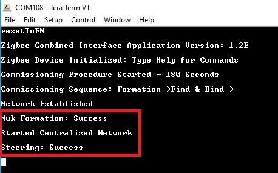
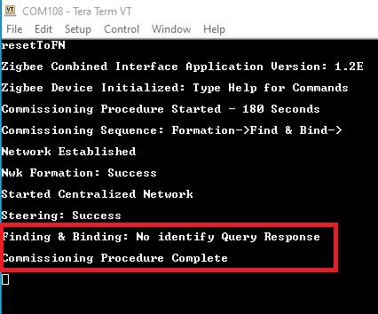
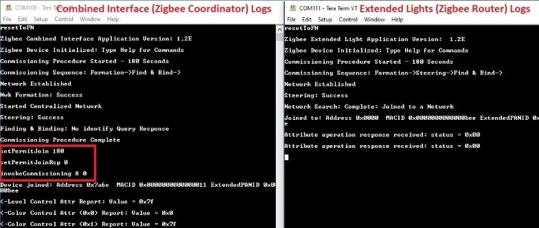
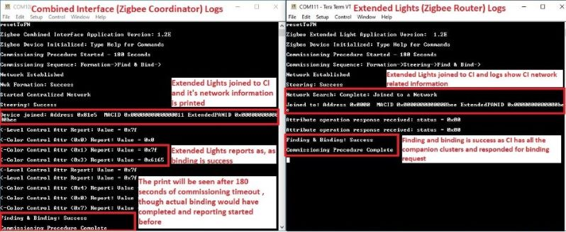
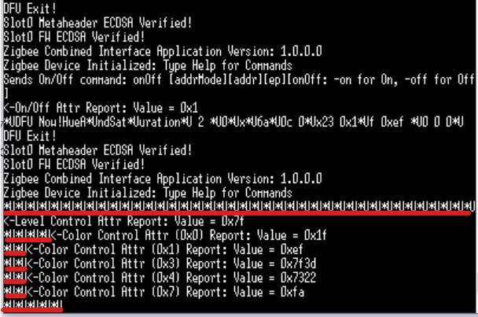

4.7.3 Zigbee Centralised Network Formation by Combined Interface
WBZ451 Curiosity Board
Devices (Device): | PIC32CX1012BZ25048(MCU) on WBZ451 Module |
Peripherals (Used, On-Board): | User Button| UART-USB Converter|
Introduction
This section describes the zigbee network formation in Combined Interface on WBZ451 Curiosity boards. In zigbee centralized network, the network is formed by zigbee co-ordinator. Other routers and end-devices can enter into the network once it is formed. The demo steps explained here can be followed for any devices, like light, thermostat, etc to bring into the CI formed network.
Hardware Requirement
| Tool | Quantity |
|---|---|
| WBZ451 Curiosity Boards | 1 |
| Micro USB cable | 1 |
| Personal Computer | 1 |
SDK Setup
Software Requirement
Programming the precompiled hex file or Application Example
Programming the hex file using MPLABX IPE
-
Precompiled Hex file is located in
"<Harmony Content Path>\wireless_apps_pic32cxbz2_wbz45\apps\zigbee\combinedInterface"folder -
For more details on the steps, go to Programming A DeviceNote: Users must choose the correct Device and Tool information
Programming the Application using MPLABX IDE
-
Follow steps mentioned in Running a Precompiled Example.
-
Open and program the Application Example "combinedInterface.x" located in
"<Harmony Content Path>\wireless_apps_pic32cxbz2_wbz45\apps\zigbee\combinedInterface\firmware" using MPLABX IDE
<Harmony Content Path> how to find what is my Harmony Content Path
Demo Description
| Application | Zigbee Logical Device Type | Functionality |
|---|---|---|
| Combined Interface | Coordinator | Device capable of controlling and monitoring other devices. It is typically a mains-powered device like a personal computer |
Demo Steps: Network Formation in CI
- Supply power to WBZ451 Curiosity Board consisting of Combined
Interface application by connecting a USB cable. Power Supply (PS) Green LED
will turn on when connect to PC.

- The application activity is shown as "Console Log" through on board UART-USB converter
-
Open Terminal(eg: Tera Term) with the setup as shown below to look for these logs
-
On the PC side virtual COM port connection that corresponds to the board shall have following settings:
BAUD RATE: 115200 (as configured in SERCOM configuration) PARITY: None DATA BITS: 8 STOP BITS: 1 FLOW CONTROL: None

-
Once the board is powered on and serial terminal setup is done, the board is ready to be operated as a coordinator. It is responsible for initially forming the network and then, via the Trust Centre functionality, managing which other devices are allowed to join the network and distributing security keys to those that are allowed to join.
-
Input command : resetToFN and look for the below logs for successful zigbee network formation on CI. It will open up the network for other zigbee devices to join for first 180 seconds from the first powerON.
-
Case1: If a near by device is trying to join a network, and sees CI then will join the network as shown in below log.
-
Case2: The commissioning procedure will last for 180 seconds. In case no other devices are there in vicinity and at the end of 180 seconds the below log is observed :
-
Case3 : To open up the network after 180 seconds to allow other devices to join, we have to input the below commands in CI, before commissioning is initiated in another device.
-
setPermitJoin 180: This command opens up the network for next 180sec
-
invokeCommissioning 8 0: This command opens up the network for "finding and binding procedure"
-
-
Success logs : When another device for example "Extended Light" successfully commissioned with "Combined Interface", below log will be seen.
- Zigbee OTAU handshake logs: "CombinedInterface" has been enabled OTAU
client feature, when it is working, it keeps sending command to handshake with
OTAU PC tool, it is ISD_DRIVER_INIT_REQUEST command as values of 2A 03 00
01 00 55, so user may see a lot of "*U*U" message in the log. When this message
keep printing, user can still input any command without being interfered.
On board button actions:
When the on board "User Button (SW2)" is pressed for more than 10seconds, it can delete all the networking information and will bring the device to factory default state.
Creating Application Device Types From Scratch Using MCC
All the supported device types including this CI projects can be generated by following the steps in Generating project from MCC.